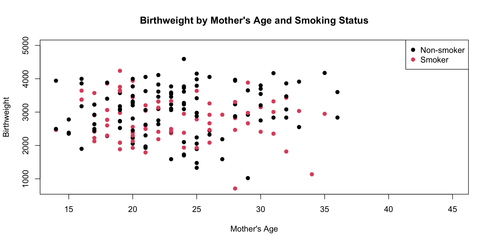
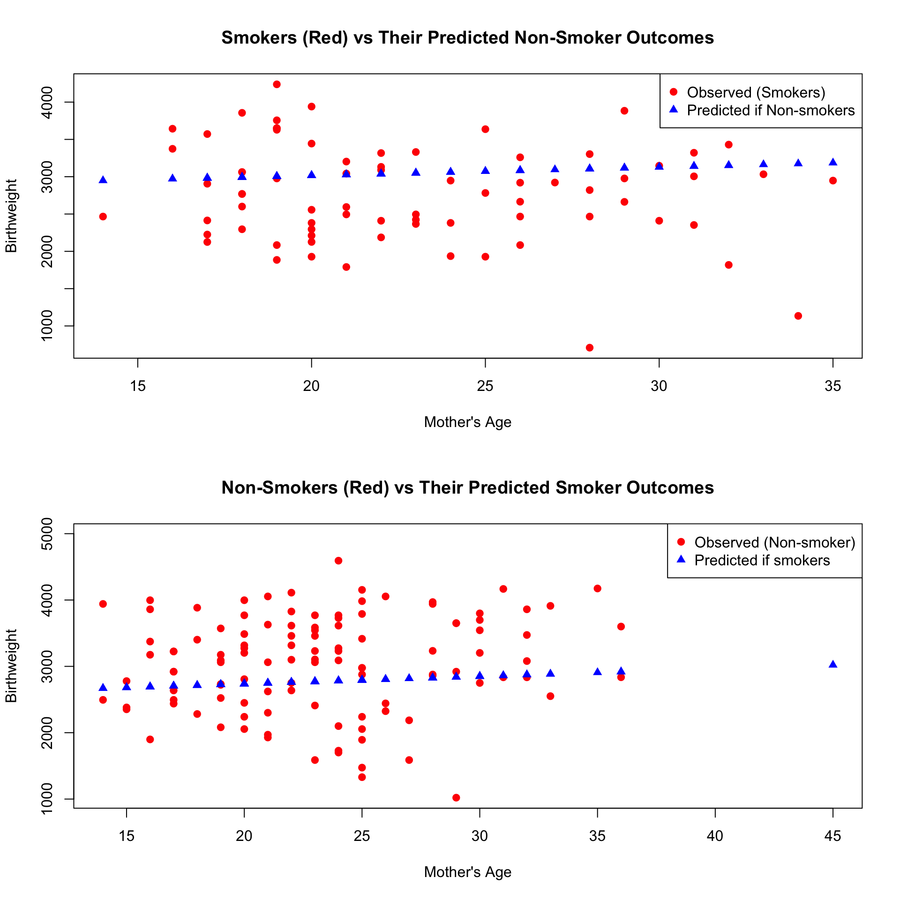
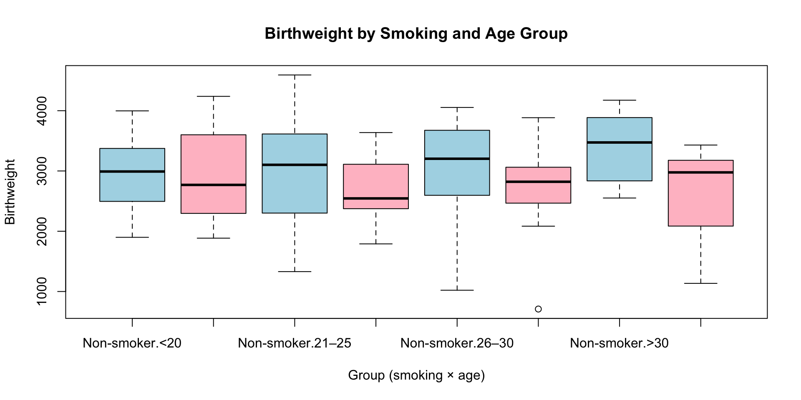
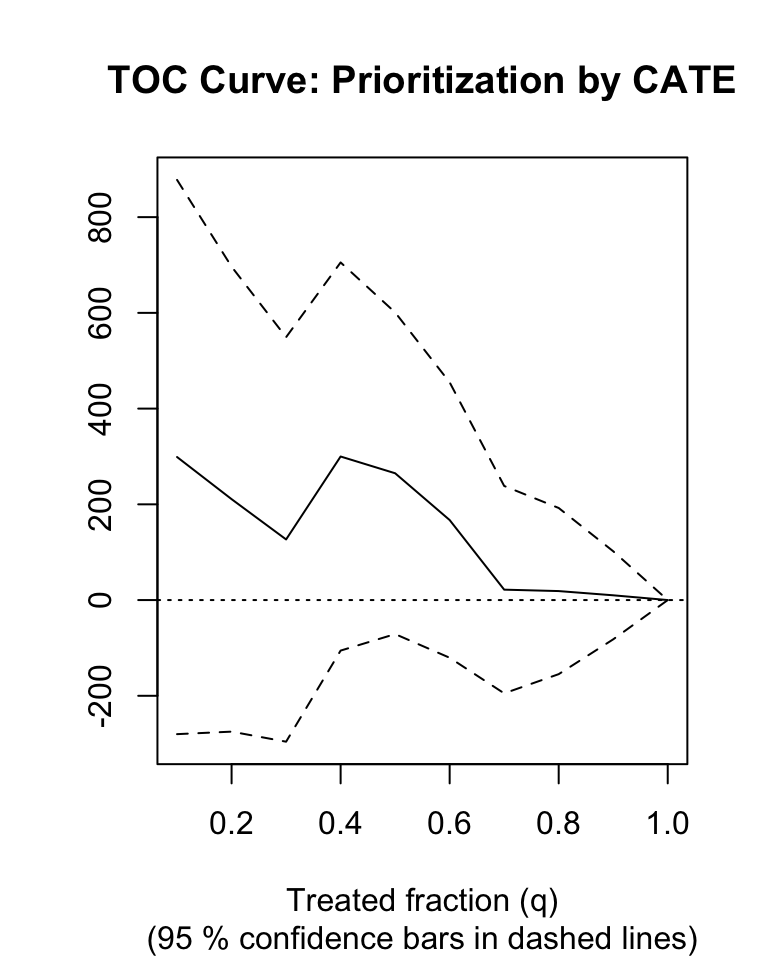

[1] 278.3561Machine Learning for Heterogeneous Treatment Effect
Estimating Individualized Causal Effects
Payam Emami
Agenda
- Why Causal Inference? – Prediction vs. Causation
- Potential Outcomes – ATE, CATE, ITE
- Classical vs ML Approaches
- Causal Forests – Honest trees, CATE
- Policy Learning –
policytree, treatment rules
- Lab
What Is Prediction?
- Predicts what will happen given patterns in the data
- Uses statistical associations
- Great for:
- Risk scoring
- Recommendation systems
- Forecasting
Example: “If you are a smoker, your risk of lung cancer is high.”
# Logistic regression for cancer prediction
model <- glm(cancer ~ smoker,
data = health_data,
family = binomial)
# Predict risk for a new patient
new_patient <- data.frame(smoker = 1, age = 55, gender = "M")
predict(model, newdata = new_patient, type = "response")- This is a predictive model using logistic regression
- It learns associations in the data
- It might correctly predict that smokers have higher cancer risk
Correlation Is Causation
# Adjusted model with potential confounders
model <- glm(cancer ~ smoker + age + gender + occupation,
data = health_data,
family = binomial)
# Predict adjusted risk
predict(model, newdata = new_patient, type = "response")Correlation can be causal only and only if:
- We adjust for all confounders (e.g., age, gender, occupation)
- There’s no unmeasured confounding
- The model is correctly specified (no omitted variables, nonlinearity, etc.)
- There’s overlap (every person could, in theory, be treated or not)
This is the assumption of “unconfoundedness” or “ignorability” Under these conditions, correlation ≈ causal effect
What Is Causation?
- What would happen if we changed something?
- Requires counterfactual thinking
- Helps design treatments, policies, and interventions
Example: “If we force someone to stop smoking, does their cancer risk drop?”
This is about changing the world, not just observing it. 
The Fundamental Problem of Causal Inference
We want to know:
What would have happened if this person had NOT received the treatment?
But…
- We only observe one world:
Either \(Y(1)\) (if treated) or \(Y(0)\) (if not treated)
- We never observe both for the same individual
This is the fundamental challenge in causal inference:
We must estimate the missing counterfactual
Potential Outcomes
For each person, define:
- \(Y(1)\): Outcome if treated
- \(Y(0)\): Outcome if not treated
We want to estimate quantities like:
Individual Treatment Effect (ITE):
\(\tau_i = Y_i(1) - Y_i(0)\)Average Treatment Effect (ATE):
\(\mathbb{E}[Y(1) - Y(0)]\)Conditional Average Treatment Effect (CATE):
\(\mathbb{E}[Y(1) - Y(0) \mid X = x]\)
Classical Causal Estimation Methods
| Method | Key Idea | Notes |
|---|---|---|
| G-computation | Model \(Y\) given \(W\) and \(X\) | Regression-based; plug-in potential outcomes |
| Matching | Compare treated and control with similar \(X\) | Propensity score or distance-based |
| IPW | Weight by inverse treatment probability | Stabilized weights often needed |
| AIPW | Combine outcome + treatment models | Doubly robust estimator |
These methods all estimate the Average Treatment Effect (ATE)
Example: Smoking and Birthweight
We’ll study the effect of maternal smoking on infant birthweight
using the real-world dataset MASS::birthwt.
bwt: infant birthweight (in grams)smoke: whether the mother smoked (1 = yes, 0 = no)age: mother’s age
Example: Smoking and Birthweight
G-computation
To estimate the causal effect of smoking on birthweight, we need to create counterfactual outcomes.
For each mother, we simulate:
- \(Y_i(1)\): Birthweight if she had smoked
- \(Y_i(0)\): Birthweight if she had not smoked
Even though each mother only did one of these in reality, we can estimate both by:
- Fitting a model:
bwt ~ smoke + age - Using that model to predict outcomes under:
smoke = 1(everyone smokes)smoke = 0(no one smokes)
This gives us a pair of outcomes for each mother: - One observed - One predicted (counterfactual)
Then: Average difference = Estimated ATE
G-computation
# Load and prepare data
data <- MASS::birthwt
data$smoke <- factor(data$smoke, labels = c("Non-smoker", "Smoker"))
# Fit outcome model
model <- lm(bwt ~ smoke + age, data = data)
# Predict outcomes under both smoking conditions
newdata_smoke1 <- data
newdata_smoke1$smoke <- "Smoker"
pred_smoke1 <- predict(model, newdata = newdata_smoke1)
newdata_smoke0 <- data
newdata_smoke0$smoke <- "Non-smoker"
pred_smoke0 <- predict(model, newdata = newdata_smoke0)G-computation
Average Treatment Effect (ATE)
The ATE is the average difference in outcomes
if everyone received treatment versus
if no one received treatment:
\[ \text{ATE} = \mathbb{E}[Y(1) - Y(0)] \]
Using G-computation, we estimated:
- For each person:
- \(Y(1)\) = predicted birthweight if smoked
- \(Y(0)\) = predicted birthweight if not smoked
- Then averaged the difference:
Estimating ATE Using a marginaleffects
Here’s an example using the marginaleffects package:
# Install if needed
library(marginaleffects)
# Fit the outcome model
model <- lm(bwt ~ smoke + age, data = data)
# Estimate marginal (average treatment) effects
avg_effect <- avg_comparisons(model, variables = "smoke")
avg_effect
Estimate Std. Error z Pr(>|z|) S 2.5 % 97.5 %
-278 107 -2.6 0.00927 6.8 -488 -68.7
Term: smoke
Type: response
Comparison: Smoker - Non-smokerCausal Inference: The Big Picture
We want to answer: “What would happen to the outcome if we changed the treatment?”
We have:
- Observed data: Treatment \(W\), Outcome \(Y\), Covariates \(X\)
- Goal: Estimate \(\mathbb{E}[Y(1) - Y(0)]\) or \(\mathbb{E}[Y(1) - Y(0) \mid X]\)
Core Assumptions
Consistency
Each person’s outcome corresponds to their actual treatmentUnconfoundedness (a.k.a. ignorability)
No unmeasured confounders:
\[ Y(1), Y(0) \perp\!\!\!\perp W \mid X \]Positivity (Overlap)
Everyone has a chance to receive either treatment:
\[ 0 < P(W = 1 \mid X) < 1 \]
Heterogeneous Treatment Effects
Not everyone responds to a treatment in the same way.

Heterogeneous Treatment Effects
Not everyone responds to a treatment in the same way.
data$age_group <- cut(data$age,
breaks = c(0, 20, 25, 30, 40),
labels = c("<20", "21–25", "26–30", ">30"))
# Fit model with interaction
model <- lm(bwt ~ smoke * age_group, data = data)
avg_comparisons(model, variables = "smoke",by = "age_group")
age_group Estimate Std. Error z Pr(>|z|) S 2.5 % 97.5 %
<20 -80.2 171 -0.469 0.6394 0.6 -416 255.4
21–25 -328.5 189 -1.733 0.0830 3.6 -700 42.9
26–30 -324.7 244 -1.329 0.1840 2.4 -804 154.3
>30 -762.6 329 -2.320 0.0203 5.6 -1407 -118.3
Term: smoke
Type: response
Comparison: Smoker - Non-smokerThese individual-level effects are called:
\[ \text{CATE}(x) = \mathbb{E}[Y(1) - Y(0) \mid X = x] \]
Where \(X\) is a person’s characteristics (like age, health, etc.)
The Problem with Linear Models for CATE
So far, we’ve tried to estimate CATE using:
- G-computation (linear regression)
- Interaction terms (e.g.
smoke * age_group)
But…
- We must specify the functional form of interactions
(linear? quadratic? thresholds?) - We need to manually choose effect modifiers (e.g. age, race, BMI)
- Interaction terms grow fast and messy with multiple covariates
- Can’t easily model nonlinear or complex treatment effects
- Not flexible enough for high-dimensional or omics data
We need a method that:
- Automatically captures heterogeneous effects
- Adapts to complex, nonlinear interactions
- Provides individual-level treatment estimates
Causal Forests
A Causal Forest is a machine learning method
for estimating Conditional Average Treatment Effects (CATE).
Built on Random Forests, but different:
| Feature | Random Forest | Causal Forest |
|---|---|---|
| Goal | Predict outcome \(Y\) | Estimate treatment effect \(\tau(x)\) |
| Splits optimize | Prediction accuracy | Difference in treatment effect |
| Output | \(\hat{Y}\) | \(\widehat{\tau}(x)\) |
- Learn how the treatment effect varies across people
- Automatically find subgroups with different effects
- Estimate CATE(x) without manually specifying interactions
- Work with many variables and complex relationships
Causal forests solve the exact problem we saw with linear models —
they let us estimate individualized causal effects flexibly and nonparametrically.
How Does a Causal Forest Work?
Causal forests estimate how treatment effects vary with covariates.
Instead of predicting outcomes, we predict treatment effects:
\[ \tau(x) = \mathbb{E}[Y(1) - Y(0) \mid X = x] \]
Each tree in the forest:
- Finds splits that maximize differences in treatment effects
- Compares outcomes between treated and control within each leaf
- Averages those differences across many randomized trees
Result: An estimate of \(\widehat{\tau}(x)\) for each individual

How Do Causal Trees Decide Where to Split?
In Causal Trees, we want to split nodes to maximize treatment effect heterogeneity
The objective is:
\[ n_L \cdot n_R \cdot ( \hat{\tau}_L - \hat{\tau}_R )^{2}, \] \[ \tau(x):=\operatorname{lm}\left(Y_i-\hat{m}\left(X_i\right) \sim W_i-\hat{e}\left(X_i\right), \text { weights }={\alpha_i(x)}\right), \]
This creates honest, stable trees that split only if the treatment effect is different, not just the outcome.

Applying a Causal Forest in R
We use the grf package to estimate how maternal smoking
affects infant birthweight, and how this effect varies across subgroups.
Data: 189 births from Baystate Medical Center (1986). Variables:
age: mother’s agelwt: mother’s weightrace: 1 = white, 2 = black, 3 = othersmoke: smoked during pregnancyptl: number of prior premature laborsht: history of hypertensionui: uterine irritabilityftv: first trimester physician visitsbwt: birthweight in grams (outcome)
library(grf)
# Prepare the data
data_cf <- as.data.frame(data[, c("age_group", "bwt", "ptl", "ht", "ui", "ftv", "lwt", "smoke")])
data_cf$age_group <- as.numeric(data_cf$age_group) # Treat age_group as numeric
# Covariates (X): all except outcome and treatment
X <- data_cf[, !colnames(data_cf) %in% c("bwt", "smoke")]
Y <- data_cf$bwt
W <- ifelse(data_cf$smoke=="Smoker",1,0)
# Fit the causal forest
cf <- causal_forest(X = X, Y = Y, W =W, seed = 123)
# Summary
print(cf)GRF forest object of type causal_forest
Number of trees: 2000
Number of training samples: 189
Variable importance:
1 2 3 4 5 6
0.257 0.006 0.000 0.006 0.187 0.501 Applying a Causal Forest in R
Understanding Heterogeneous Effects: What Drives Variation?
After fitting a causal forest, we can ask two key questions:
Which variables drive variation in the treatment effect?
How do they influence it?
variable_importance()for causal forests uses a special version of Breiman’s importance measure, adapted for HTE:
[1] "lwt" "age_group" "ftv" This tells us which variables are most often used to split the forest
based on treatment effect heterogeneity, not just outcome prediction.
2. Best Linear Projection of Treatment Effects
Best linear projection of the conditional average treatment effect.
Confidence intervals are cluster- and heteroskedasticity-robust (HC3):
Estimate Std. Error t value Pr(>|t|)
(Intercept) 594.4161 521.1505 1.1406 0.2555
lwt -3.4022 3.9972 -0.8511 0.3958
age_group -192.1580 122.0143 -1.5749 0.1170
ftv 44.4866 111.3332 0.3996 0.6899This fits a linear model: \[ \hat{\tau}(x) \approx \beta_0 + \beta_1 X_1 + \beta_2 X_2 + \dots \]
Letting us quantify how each covariate influences the estimated CATE.
- Positive β → covariate increases the effect of treatment
- Negative β → covariate decreases the effect (e.g., makes smoking more harmful)
Validating a Causal Forest
- In causal inference, we cannot observe true treatment effects for individuals.
- Standard prediction error metrics don’t apply.
- We instead evaluate the model’s ability to rank individuals by treatment benefit.
Evaluation Metrics
TOC(q) (Targeting Operator Characteristic):
Measures the gain from treating the top \(q\%\) individuals ranked by predicted CATE:\[ \text{TOC}(q) = \text{ATE}_{\text{top } q\%} - \text{ATE}_{\text{all}} \]
RATE (AUTOC):
The area under the TOC curve, summarizing ranking performance across all \(\in (0,1]\)
set.seed(123)
# Split data into training and evaluation sets
n <- nrow(X)
train_idx <- sample(1:n, n / 2)
eval_idx <- setdiff(1:n, train_idx)
# Train causal forest on training data
train.forest <- causal_forest(X[train_idx, ], Y[train_idx], W[train_idx])
# Predict CATEs on evaluation data
tau.hat.eval <- predict(train.forest, X[eval_idx, ])$predictions
# Fit evaluation forest (for DR score computation)
eval.forest <- causal_forest(X[eval_idx, ], Y[eval_idx], W[eval_idx])
# Compute RATE and TOC
rate.cate <- rank_average_treatment_effect(eval.forest, priorities = tau.hat.eval)
# Plot TOC curve = plot(rate.cate, main = "TOC Curve: Prioritization by CATE")
Evaluate How Prioritization Works
- TOC can be used to evaluate any prioritization rule, not just model-based ones.
- Instead of using predicted CATEs, we can rank individuals by:
- Age
- BMI
- Clinical risk score
- Or even a policy rule like “treat all patients under 30”
- This tells us: How good is this variable at identifying who benefits most?
Validating the Causal Forest: Calibration Test
After fitting the causal forest, we want to know: Are the estimated individual treatment effects (CATEs) reasonable and reliable?
We use the test_calibration():
Best linear fit using forest predictions (on held-out data)
as well as the mean forest prediction as regressors, along
with one-sided heteroskedasticity-robust (HC3) SEs:
Estimate Std. Error t value Pr(>t)
mean.forest.prediction 0.96145 0.48232 1.9934 0.02384 *
differential.forest.prediction -0.99698 1.13760 -0.8764 0.80903
---
Signif. codes: 0 '***' 0.001 '**' 0.01 '*' 0.05 '.' 0.1 ' ' 1This tests the model:
\[ Y_i \approx \mu(X_i) + (2W_i - 1) \cdot \hat{\tau}(X_i) \]
A coefficient of 1 for ‘mean.forest.prediction’ suggests that the mean forest prediction is correct, whereas a coefficient of 1 for ‘differential.forest.prediction’ additionally suggests that the heterogeneity estimates from the forest are well calibrated. The p-value of the ‘differential.forest.prediction’ coefficient also acts as an omnibus test for the presence of heterogeneity: If the coefficient is significantly greater than 0, then we can reject the null of no heterogeneity.
Decision Rules
Now that we’ve learned how to estimate individual treatment effects using causal forests:
What can we do with that information?
Goal: Personalized Decision-Making
Instead of applying one rule to everyone, we want to learn:
“Who should get the treatment and who should not?”
This is called a treatment policy:
\[ \pi(x) \in \{0, 1\} \]
- \(\pi(x) = 1\) → assign treatment
- \(\pi(x) = 0\) → assign control (no treatment)
We want a simple, interpretable rule to make this decision.
Learning Optimal Treatment Policies with policytree
The policytree package learns a shallow decision tree that tells us:
“Based on their profile, should this person receive the treatment?”
What We Provide:
- Covariates \(X\)
- Reward scores: doubly robust scores (Γ̂), which quantify how beneficial treatment is
Example
For example we want to offer a program to help pregnant women quit smoking…
- The program is expensive
- It requires time, staff, and follow-up
- Not everyone benefits equally
Goal: Who should we offer the program to?
We define rewards using double_robust_scores
control treated
[1,] 2306.767 2662.737
[2,] 2058.634 2939.755Control (0 = not smoking): Expected outcome if the person does not smoke
Treated (1 = smoking): Expected outcome if the person smokes
Then we fit:
Example
Summary
What happens if we intervene? (e.g., prevent someone from smoking will birthweight improve?)
What We Learned:
Prediction vs. Causation:
Correlation ≠ Causation → we need counterfactual reasoningG-Computation:
A simple way to estimate treatment effects using regressionHeterogeneous Treatment Effects (HTE):
People respond differently — CATE models let us capture thisCausal Forests:
A flexible machine learning method to estimate individual treatment effects
(without specifying interactions manually)Model Validation:
average_treatment_effect(),test_calibration(),best_linear_projection()- Assessed quality, stability, and interpretability of CATEs
Policy Learning with
policytree:
Converted treatment effects into actionable, interpretable decision rules
using doubly robust scores
We went from simple regression to personalized, interpretable treatment policies
based on data, not assumptions.